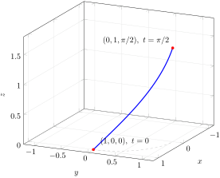

Consider a wire of length \(l\) and mass \(m\text{.}\) The wire is helix-shaped, with its bottom end located at \((1,0,0)\) and parametric equation
\begin{equation*}
\mathbf{r}(t)=\langle \cos t,\ \sin t,\ t\rangle,\qquad t\ge 0.
\end{equation*}
Its density (mass per unit length) is \(\rho(x,y,z)=4x^2y^2\) kg/m. Assuming that \(m=\dfrac{\pi}{2\sqrt{2}}\) kg, calculate the length \(l\) of the wire.
Solution.
The wire occupies the part of the helix with \(0\le t\le b\text{,}\) where the upper limit \(b\) is unknown: it marks where the wire ends. Our plan has two steps. First we use the known mass in the formula
\begin{equation}
m = \int_0^{b} \rho\left(x(t),y(t),z(t)\right)
\left\lVert\mathbf{r}'(t)\right\rVert\,dt\tag{3.1}
\end{equation}
to find \(b\text{;}\) then the length is the arc length \(l=\int_0^b \lVert\mathbf{r}'(t)\rVert\,dt\text{.}\)
First we find \(\mathbf{r}'(t)\) and its length:
\begin{align*}
\mathbf{r}'(t) \amp = \langle -\sin t,\ \cos t,\ 1\rangle,\\
\left\lVert\mathbf{r}'(t)\right\rVert \amp
= \sqrt{\sin^2 t+\cos^2 t+1}=\sqrt{2}.
\end{align*}
Next we write the density along the curve in terms of \(t\text{,}\) using the double-angle identity \(2\sin t\cos t=\sin(2t)\text{:}\)
\begin{equation*}
\rho\left(x(t),y(t),z(t)\right)
= 4x^2y^2
= 4\cos^2 t\,\sin^2 t
= \left(2\sin t\cos t\right)^2
= \sin^2(2t).
\end{equation*}
Substituting into (3.1) and using the half-angle identity \(\sin^2(2t)=\tfrac{1}{2}\bigl(1-\cos(4t)\bigr)\text{,}\)
\begin{align*}
m \amp = \sqrt{2}\int_0^{b}\sin^2(2t)\,dt
= \frac{1}{\sqrt{2}}\int_0^{b}\bigl(1-\cos(4t)\bigr)\,dt\\
\amp = \frac{1}{\sqrt{2}}
\left(t-\frac{1}{4}\sin(4t)\right)\bigg|_0^{b}
= \frac{1}{\sqrt{2}}
\left(b-\frac{1}{4}\sin(4b)\right).
\end{align*}
Setting this equal to the given mass \(m=\dfrac{\pi}{2\sqrt{2}}\) and multiplying both sides by \(\sqrt{2}\text{,}\)
\begin{equation*}
b-\frac{1}{4}\sin(4b)=\frac{\pi}{2}
\quad\Longrightarrow\quad b=\frac{\pi}{2},
\end{equation*}
since \(\sin(4\cdot\tfrac{\pi}{2})=\sin(2\pi)=0\text{.}\) (This solution is the only one: the left-hand side has derivative \(1-\cos(4b)\ge 0\text{,}\) so it is increasing and crosses the value \(\pi/2\) exactly once.)
The length of the wire is then the arc length from \(t=0\) to \(t=\pi/2\text{.}\) Because the speed is the constant \(\sqrt{2}\text{,}\)
\begin{equation*}
l=\int_0^{\pi/2}\left\lVert\mathbf{r}'(t)\right\rVert\,dt
=\sqrt{2}\int_0^{\pi/2}dt
=\frac{\pi}{\sqrt{2}}\approx 2.22 \text{ meters}.
\end{equation*}
The wire—a quarter turn of the helix from \((1,0,0)\) up to \((0,1,\pi/2)\)—is shown in Figure 3.4, and the accumulation of its mass is animated in Figure 3.5.

A three-dimensional coordinate box with x and y running from minus 1.2 to 1.2 and z from 0 to 1.8. A thick blue curve, one quarter turn of a helix, starts at a red point on the floor labelled (1, 0, 0), t equals 0, and climbs steadily as it curves, ending at a red point labelled (0, 1, pi over 2), t equals pi over 2, about 1.57 units above the floor. A dashed gray quarter circle on the floor of the box shows the curve’s shadow.